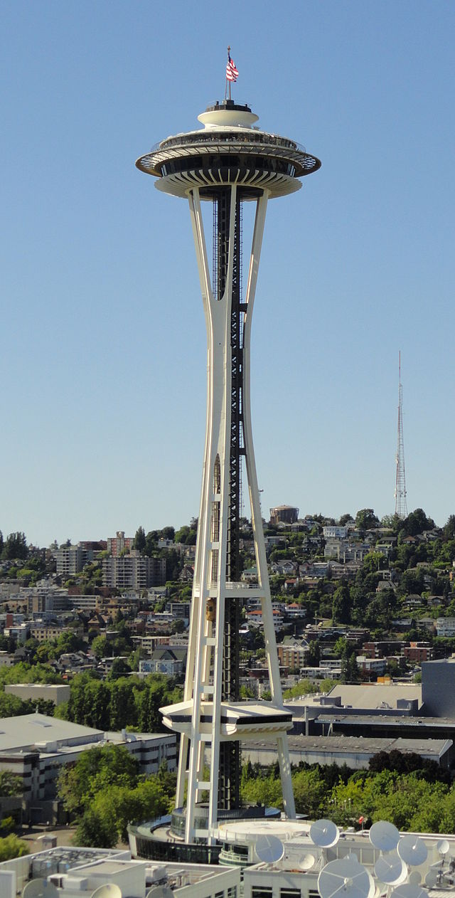

Built for the 1962 World’s Fair—the Century 21 Exposition whose theme was
“The Age of Space”—the tower’s futuristic design was inspired by the idea that the fair needed a structure to symbolize humanity’s Space Age aspirations.
Since its grand opening on April 21, 1962, the landmark continues to symbolize the innovative and forward-thinking spirit of Seattle.
Located at Seattle Center, the Space Needle stands at 605 feet tall and is one of the most photographed structures in the world.

×